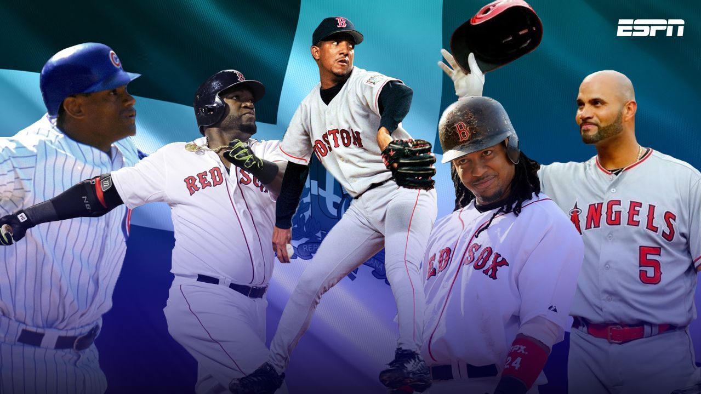

Top 10 de los mejores peloteros dominicanos en la historia de las Grandes Ligas

Puede que no haya una mayor cuna de talento en las Grandes Ligas de Béisbol que la República Dominicana.
La historia del país con el béisbol data de finales de 1800. El primer jugador dominicano, Ozzie Virgil, llegó a las mayores en 1956.
De los más de 500 jugadores dominicanos que han debutado en las grandes ligas, estos son los 10 mejores en la historia de la MLB que salen de la República Dominicana.
Este ranking lo he hecho como periodista, si no estás de acuerdo con alguno favor dejarnos saber en los comentarios.
A continuación nuestro ranking:
10. Robinson Cano

Cano ya es cinco veces All-Star y dos veces ganador del Guante de Oro.
Nacido en San Pedro de Macorís, ayudó a llevar a los Yankees a un campeonato de la Serie Mundial en 2009 y a República Dominicana al título del Clásico Mundial de Béisbol en 2013.
Fue nombrado capitán del equipo de República Dominicana en el clasico mundial del 2017.
Estadísticas hasta la temporada 2022: .301, 335 HR, 1,306 RBI, .839 OPS
9. Sammy Sosa

Los 609 jonrones de Sosa ocupan el octavo lugar de todos los tiempos y su total de carreras impulsadas es el 27 en la historia.
En un tramo increíble de 1998 a 2001, conectó 243 jonrones, incluidos 66 en 1998.
Fue unos de los que protagonizaron una batalla de jonrones epica junto a Mark McGwire en la campaña 1998.
Estadísticas: 18 años, .273, 609 HR, 1,667 RBI, 234 SB, .878 OPS
8. Adrian Beltre

Es tres veces All-Star y un cuatro veces ganador del Guante de Oro en tercera base. Nacido en Santo Domingo, lideró la Liga Nacional en jonrones en 2004 con 48.
El 25 de enero de 2019, los Texas Rangers anunciaron que retiraron el número 29 de Adrián Beltré durante una ceremonia en junio de 2019. Y muchos expertos de la MLB dicen que sera un futuro Salon de la fama.
Estadísticas 21 años: .286, 477 HR, 1,707 RBI, .819 OPS
7. David Ortiz

Un nueve veces All-Star, tuvo un don para el gran éxito y terminó su carrera en 2016 con 2,472 hits.
Originario de Santo Domingo, jugó un papel clave en dos equipos ganadores de la Serie Mundial y conectó 54 jonrones en 2006.
Ortiz fue elegido al Salón de la Fama en su primera aparición en la papeleta. Se convierte en 4to Dominicano.
Estadísticas: 20 años, .286, 541 HR, 1,768 RBI, .931 OPS
6. Manny Ramirez

Considerados por muchos el mejor bateador Dominicano.
Ramírez nació en Santo Domingo y creció en Nueva York. Asistió a 12 All-Star Games y ganó un título de bateo, un título de jonrón, un título RBI, 9 bate de platas y 2 series mundiales.
Golpeó 21 grand slams y 29 jonrones de postemporada.
Estadísticas: 19 años, .312, 555 HR, 1,831 RBI, .996 OPS
5. Alex Rodríguez

Para muchos es el mejor jugador dominicano en la historia de las Grandes Ligas.
Alex Rodríguez, quien fue campocorto por varios años de Mariners, Rangers y antesalista de los Yankees, pegó 696 jonrones de por vida en las mayores, ganó tres veces el MVP y fue 14 veces al Juego de Estrellas.
Golpeó 24 grand slams que lo convierte en el jugador con la mayor cantidad.
Estadísticas: 22 años, .295, 696 HR, 2,086 RBI, .930 OPS
4. Albert Pujols

Para muchos es el mejor jugador dominicano en la historia de las Grandes Ligas.
Albert Pujols es un seguro miembro del Salón de la Fama cuando se retire de las Grandes Ligas.
El dominicano es parte de la corte dorada de los jugadores de ese país en las mayores porque tiene tres premios al Jugador Más Valioso, 10 apariciones en el Juego de Estrellas y un premio al Novato del Año.
Estadísticas hasta 2022 (22 temporadas): .296, 687 HR, 2176 RBI, .916 OPS
3. Juan marichal

Uno de los lanzadores más intimidantes de todos los tiempos, fue el primer jugador dominicano en ser votado en el Salón de la Fama.
Nacido en Laguna Verde, Marichal ganó más juegos (161) que cualquier otro jugador en la década de 1960.
La estrella de los Giants desde hace mucho tiempo fue el lanzador ganador en uno de los mejores juegos lanzados cuando él y su compañero del miembro del Salón de la Fama Warren Spahn se vieron encerrados en un duelo sin puntaje durante 15 entradas en 1963.Marichal fue 10 veces All-Star.
Estadísticas: 16 años, 243-142, 2.89 ERA, 3507 IP, 3153 H, 2303 Ks, 1.101 WHIP
2. Vladimir Guerrero

Otro jugador que ya es miembro del salón de la fama, Guerrero fue una maravilla de cinco herramientas al principio de su carrera y aún era un temido bateador de poder más tarde.
Nativo de Don Gergorio, Guerrero fue el Jugador Más Valioso de la Liga Americana de 2004 y nueve veces ganador del All-Star y ocho veces Silver Slugger.
Con 2,590 éxitos en su carrera, ningún jugador de la República Dominicana tuvo más hasta 2014. Bateó mejor que .300 en cada temporada de 1997 a 2008.
Estadísticas: 16 años, .318, 449 HR, 1,496 RBI, 181 SB, .931 OPS
1. Pedro Martinez

Tres veces ganador del Premio Cy Young, Martínez fue uno de los lanzadores más dominantes de todos los tiempos con el mayor porcentaje de victorias de cualquier ganador de 200 juegos en la era moderna.
Un nativo de Manoguayabo, Martínez lanzó duro y tenía un arsenal de lanzamientos que no tenía rival en su época.
Hizo ocho equipos All-Star, fue el Jugador Más Valioso del Juego de Estrellas en 1999, y lideró a la Liga Americana en efectividad cuatro veces y en ponches tres veces.
También ganó una Serie Mundial con los Medias Rojas de 2004. Fue elegido miembro del Salón de la Fama del Béisbol en su primer año de elegibilidad en 2015. Los Medias Rojas también retiraron su número en 2015.
Estadísticas: 18 años, 219-110, 2.93 ERA, 2827.1 IP, 2221 H, 3154 Ks, 1.054 WHIP